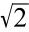
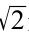
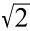
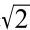
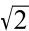
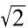
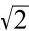
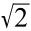

在一个单位正方形中，对角线的长度是

。为了证明这个数是无理数，我将利用反证法，先假设
是有理数，然后我将证明它为什么不成立。如果说
是有理数这一结论不成立，那么它一定是无理数。如果

是有理数，则有自然数a和b，使得
=a/b。我们设这是最简分数的形式，也就是没有办法将a/b重写为m/n，其中m和n是小于a和b的自然数。如果

=a/b，那么把方程的两边都取平方，就有2=a2 /b2 ，我们可以把它重写为a2 =2b2 。无论b2 的值是多少，2b2 一定是偶数，因为任何自然数乘以2都是偶数。如果2b2 是偶数，那么a2 就是偶数。奇数的平方总是奇数，而偶数的平方总是偶数，这意味着，a一定是偶数。
如果a是偶数，那么就会有一个小于a的数c，使得a=2c，因此a2 =（2c）2 =4c2 。
用上面等式中的4c2 代替a2 ，我们会得到4c2 =2b2 。它可以简化为b2 =2c2 。同样，这意味着b2 是偶数，因此b是偶数。而如果b是偶数，那么一定有一个小于b的数字d，使得b=2d。
也就是说，a/b可以重写为2c/2d，也就是c/d，因为2可以被消去。矛盾出现了：在上面，我们已经规定了a/b是分数的最简形式，这意味着不会有比a和b更小的c和d出现，使得a/b=c/d。由于通过假设

可以被写作a/b，我们已经导出了一个不合理的结论，那么
一定无法用这种方式写出来，所以 是无理数。